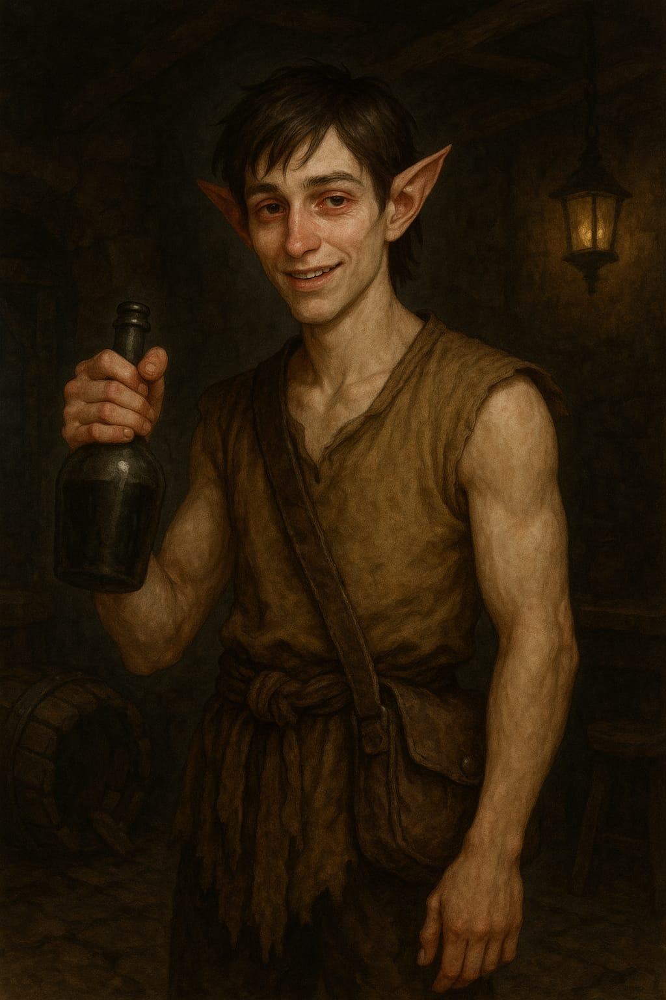

Flick Twick, o Monge
Informações básicas
Nome do personagem: Flick, o Monge
Classe: Monge
Raça: Elfo
Status
Vida: 99/120
Teor etílico 5/15
Inventário
Pingente dos Sussurros
Soco inglês (equipado)
Garrafa de ãlcool do bêbado
.
.
.
Ouro: 7
Habilidades
Corpo Blindado (Habilidade Ativa)
O monge estala o pescoço e simplesmente se firma como uma estátua bêbada. Os olhos semicerrados. O corpo relaxado. Mas há algo de impenetrável em sua postura. O mundo pode desabar ao redor e ele só vai balançar com o impacto.
Efeito: O monge permanece imóvel por 1 turno e recebe apenas metade do dano físico durante esse tempo. Não pode atacar ou se mover até o próximo turno.
Custo da Habilidade: 3 + 1d4 pontos de Teor Etílico.
Redemoinho de Saquê (Habilidade Ativa)
Girando como um bêbado em festa, o monge transforma seus passos cambaleantes em pura destruição. O cheiro de álcool no ar é forte o suficiente pra embriagar os sentidos dos inimigos próximos. Cada giro ( 1d4 ) traz uma nova pancada, um novo tropeço mortal.
Efeito: Realiza um ataque contra todos os inimigos em alcance corpo a corpo. Cada ataque causa 1d8 de dano e tem chance (1d4=4) de deixar o alvo tonto por 1 rodada.
Custo da Habilidade: 5 + 1d4 pontos de Teor Etílico .
Ataque que Dobra o Tempo (Habilidade Ativa)
O monge finge tropeçar, gira o corpo sem equilíbrio, e num surto de sincronia improvável acerta um ataque que parece atravessar não só a carne, mas a própria linha do tempo. O inimigo sente a dor... duas vezes.
Efeito: O ataque causa dano duplo.
Custo da Habilidade: 4 + 1d4 pontos de Teor Etílico.
Recuperação de Teor Etílico:
Ao beber uma bebida alcoólica (ação livre ou bônus), role 1d6 + 1d7. O resultado é adicionado ao Teor Etílico.
Se o valor ultrapassar 15, o excedente é ignorado e o monge fica Tonto, perdendo a próxima reação.